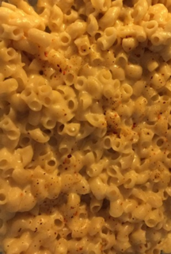
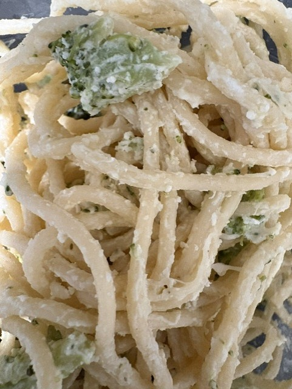

Anna's Mac & Cheese
A stovetop cheese sauce, baked until it bubbles

Ingredients
- 3 Tbsp. butter
- Approx. 3 Tbsp flour
- 2 c. milk, whatever type you use, plus one cup more milk if needed
- 4 c. shredded cheddar cheese (it's better if you shred it yourself)
- 8oz pasta, whatever shape you like
- Onion powder or minced onion
- Salt
- Pepper
- Seasoned breadcrumbs (optional)
- Ham, buffalo chicken sausage, hot sauce (optional)
Steps
- Start water boiling in a saucepan for the pasta. Add pasta to water and boil until al dente. It will finish cooking in the sauce, so you want it not quite done.
- Melt butter on medium heat. Add flour in small amounts, stirring and letting it cook up. Don't skip this step, or else your sauce will taste floury.
- Add milk, a little at a time. Keep stirring the sauce and use the back of a spoon to flatten out any lumps of flour that are left. Once all the milk is added, check the consistency. If it's too thick, add up to a cup more milk.
- Gradually add shredded cheese until the cheese melts and the sauce has thickened. Add onion powder, minced onion, salt and pepper to taste.
- Drain pasta and scoop it into a 9x13 casserole dish that has been lined with parchment paper. Add sauce and top with any cheese that is left over, or seasoned breadcrumbs if you have any.
- Cover with aluminum foil and bake at 350 degrees for about 25 minutes. Remove aluminum foil and bake for an additional 10 minutes, or until the sauce bubbles and has baked down. This recipe is versatile! Serve it with your favorite hot sauce, or add chopped leftover ham, cooked broccoli, or buffalo chicken sausage before baking if you have leftovers to use up.
